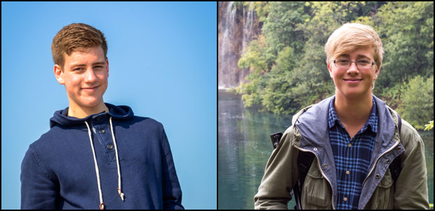

About Us
Hello there! We are two students from Karlstad, Sweden and we made this website as our project in the last year of High School ("Gymnasiet").
• • •
The Project
It all started in the late spring of 2012. We needed an idea for our 100 hours project in school. For inspiration, we went on an exhibition where the third graders were showing their projects.
We got interested in a project about Chernobyl. They had gone to the old nuclear power plant to make a documentary and a website about it. We were immediately eager to do our project abroad so we began searching for an interesting destination. At first we thought about making a documentary as well, but later we decided that it would be an information website and a travel guide with a short inspiring movie about the place.
Then the question was where we were going. We thought that it was enough to visit a country within Europe and we found two interesting places. The first was Plitvice Lakes National Park in Croatia, a water landscape with many waterfalls. The second was Meteora in Greece, a place with monasteries on top of spectacular rock formations with steep hill slopes. Both of them are UNESCO World Heritage Sites. Eventually we decided that we wanted to visit the Plitvice Lakes National Park.
One week in September 2012 we went to Croatia to gather material for our website and our short movie. We flew to Split and the next day we went by bus to the water park. More about how to get there you will find here.
We stayed there for three days and for two days we weren't so lucky with the weather. It was a fine but persistent rain and it was foggy all the time for the first two days. Believe it or not, but from a photographers point of view bad weather means good lighting conditions even if the rain can be tricky sometimes. On the third day we got better weather. When we were done with our work in Plitvice we went back to Split and had a great vacation at the coast.
What you are looking at right now is our final product. A handmade information website with a beautiful gallery and a stunning short movie. We finnished the project in late March 2013.
Axel Magnussen
Fredrik Beiron
Our Work
Fredrik: Photographer, web designer, web developer and writer.
Axel: Cameraman, filmmaker and some writing as well.
The website is built from scratch without any themes or similar tools. It's designed in Adobe Photoshop and developed in Adobe Dreamweaver. We have used the JavaScript library jQuery to program a more dynamic feeling to this website. The photos have been post processed in Adobe Photoshop Lightroom 4. The movie is made in Adobe Premiere Pro and Adobe After Effects.
Copyright
The content on this website is copyrighted if nothing else is stated under the specific content. Every picture on this website without an author under it are taken by Fredrik Beiron.
There are some free to use wooden materials taken from WebTreats ETC that is not made by us. The music in the video is made by ManchesterSound and is free to use. The free image viewer Lightbox2 in our galleries are made by Lokesh Dhakar and the free video player is taken from Html5box.
Fonts: Cooperplate (free to use with Adobe's EULA agreement), Gill Sans (by Eric Gill, died 1940, free to use after 2010) and Arial (free to use if it is just display and not available for download).
About the Competition
We have worked very hard with this website and its content. Therefore we wanted to be a part of the competiton that Webbstjärnan made. The competition is for students in Sweden and it's designed to improve the usage of internet in school. There are different categories (e.g. different age and a project category). More information here.
• • •
Special Thanks To
- Adobe for fantastic computer softwares.
- WebTreats ETC for free to use textures.
- ManchesterSound for the free music "Shes Confused" in our video.
- Webbstjärnan and .SE for the free domain.
- Älvkullegymnasiet (our school) for letting us borrow necessary video gear.
- Lokesh Dhakar for his free jQuery plugin Lightbox2.
- Html5box for sharing the free video lightbox plugin.
- Ann-Kristin Hamberg for being a great supervisor.
Contact
Fredrik Beiron: fredrik@beiron.se
Axel Magnussen: axel.magnussen@gmail.com